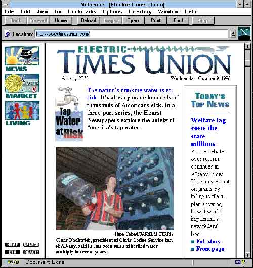

Facing the Future
 Seeing year-over-year circulation declines at their own paper, leaders at the Times Union started to take a closer look at the Internet in the mid-1990s although—as at other papers—there was little clarity about how or whether the Web would improve the service the newspaper provided to readers. Times Union nonetheless launched its first website, timesunion.com, in August 1996. It was called ElectricTU and included classified advertisements and calendar listings.
That proved to be only a start. Over the next several years the Times Union , with encouragement and resources from its parent company the Hearst Corporation, developed and expanded its Internet operations in advance of most other regional newspapers. Most newspapers its size had little more on their websites than a community bulletin board and classified advertising modified for the Web. But the Times Union went further, emulating larger and richer papers such as the Washington Post in offering extensive archives, dedicated online teams, and links to reporters’ email addresses. By 1999, the Times Union had a dedicated website staff of five—set up in the corner of the newsroom—to abridge news stories and post them quickly to the website. By the summer of that year, timesunion.com also offered interactive maps and online discussion forums. Soon after, the newspaper was named the best American online newspaper in its circulation class by the Newspaper Association of America, congratulated for its “superior design, in-depth content and focus on interactivity and community.”
The Times Union ’s online effort reached a peak in 2000, when a high-profile murder trial moved from Manhattan to Albany. New York City police officers had allegedly murdered immigrant Amadou Diallo. The trial landed in a courtroom whose judge made a rare decision to admit not just reporters, but cameras. Then- Times Union editor Jeffrey Cohen saw an opportunity to test the new Web medium. [8] Cohen dedicated a reporter to cover the trial for print, and for the first time, another to cover it only for timesunion.com. In a radical departure from the usual job asked of reporters, staff writer Mark McGuire dictated stories—as often as six times a day—over pay phones to a Web editor back at the newsroom. Timesunion.com staff joined the paper’s photographers at the scene and used new, 360-degree cameras to shoot demonstrations on the courthouse lawn. The video was posted on timesunion.com along with a courtroom diagram so Web readers could “explore” the room. As readers logged on to the site by the thousands, the Times Union team glimpsed the potential—and the threat—of the Internet. McGuire recalls thinking his job had changed and that “we were not just competing against other newspapers, we were now competing against TV.” [9]
While the newspaper industry reeled from the “dot.com” bust, it looked as if the
Times Union
would weather the worst of the economic storm, maintain leadership online, and stay ahead of shifting media trends. Like many newspapers, the
Times Union
experienced a significant downturn, but it never lost money, and it remained one of the most financially successful of the Hearst papers. From the outside, it looked in 2004 as if the paper had emerged from the economic turmoil largely unscathed and with most of its staff—269 employees, 137 in the newsroom—intact. The newspaper had smooth relations with its labor unions, and contracts were negotiated without conflict.
 The
Times Union
managed to avoid layoffs; instead it took a number of steps to shave expenses. The paper’s management raised subscription prices and discontinued weekly technology and children’s sections. It reduced the number of newspaper and magazine subscriptions in the office, limited staff travel, eliminated staff coverage of the Olympics, and trimmed the size of the paper to cut newsprint costs.
The
Times Union
managed to avoid layoffs; instead it took a number of steps to shave expenses. The paper’s management raised subscription prices and discontinued weekly technology and children’s sections. It reduced the number of newspaper and magazine subscriptions in the office, limited staff travel, eliminated staff coverage of the Olympics, and trimmed the size of the paper to cut newsprint costs.
Meanwhile, award trophies piled up in the editor’s office. For its coverage of the Diallo case, the Times Union was recognized again with a top award by the newly-formed Online News Association in 2001. But looking back, Smith says the apparent equilibrium was unstable—like modeling in clay. “You just get the arm on and the head rolls off,” he says. “You put the head back on and the leg falls off.” [10]
Footnotes
[8] Cohen left for the Houston Chronicle in 2002.
[9] Author’s interview with Mark McGuire on April 5, 2007, in Albany, New York. All further quotes from McGuire, unless otherwise attributed, are from this interview.
[10] Author’s interviews with Rex Smith, April 5, 17 and 18, 2007, in Albany, New York and phone interviews June 14 and 18, 2007. All further quotes from Smith, unless otherwise attributed, are from these interviews.